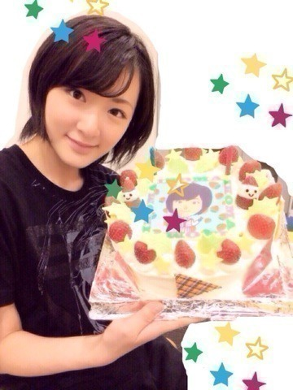
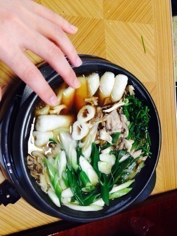

| 2013/12 31 Tue | 生駒里奈 駆け抜けました！ |
2013年。
最初に思ったこと。
まだ1月か〜
12月になるのはまだまだ先だな〜って
思ってました。
でももう12月31日。
1年凄く早く過ぎて行った。
それはきっと楽しくて
辛くて、嬉しくて、悲しくて、ちゃんと全力で出来ていたからなのかな？
今年は自分にとってプラスになるものが沢山ありました。
NARUTOのオープニングになったのはもう嬉しすぎてしばらく発狂してました。笑
LIVEを沢山やらせて頂きました。
自分の力のなさを実感したよ。
このままじゃダメだ。
私は自然とステージを走りました。
全体に届くように。
ただ煽るだけじゃつまんない。
どうしたら皆さんが楽しくLIVEを出来るのだろう？
メンバーと話し合ったり。
スタッフさんにも相談して。
最近褒められる様になりました。
これは自分の自信に繋げてもいいよね？
もっとスキルアップしたい！
煽り大好きになりました(｡・・｡)
いろんな出会いがありました！
それは私にいろんなものを与えてくれました。
自分らしくも大切。
でもいいものを吸収するのも自分の成長にすごくいいものをくれます。
来年、
それを生かしていけるようにしようっ！
握手会で18歳の目標は？
とか
来年の抱負は？
など聞かれました。
もちろんありますよ。
ただし！
秘密です。
でも私はその目標の為に一生懸命頑張ります！
2013年私を応援して下さってありがとうございました！
出会った皆さんありがとうございました！
メンバー、スタッフさんありがとうございました！
また来年もよろしくお願いします！
紅白歌合戦みて、CDTV見て年越します！
あっ！
新堂本兄弟の収録をした時にお誕生日お祝いしてもらいました〜☆

生駒ちゃんがプリントされたチョコ♡
ありがとうございます(｡・・｡)
今からお昼ご飯です〜

きりたんぽ♡
あっ！
紅白歌合戦にリンホラでるねっ！
紅蓮の弓矢！
私ツイッターやってないから、
やってる人代わりに
イェーガー！
的な事ツイートして下さい！
ではっ！
また来年〜
へばなっ！☆